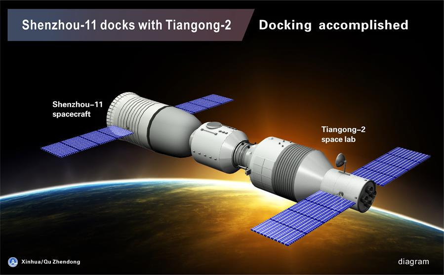

Historie

Návrh kosmické lodi inspirované lodí Sojuz byl dokončen v srpnu 1995 a poté byla zahájena stavba čtyř pozemních testovacích prototypů. Ceny požadované Ruskem za klíčové technologie považovali Číňané v některých případech za přemrštěné, a proto museli vyvíjet vlastní řešení. Další komplikace způsobilo rozhodnutí použít zvětšenou kabinu (oproti Sojuzu) i počáteční neúspěchy při vytváření únikového systému pro případ havárie při startu. První čtyři zkušební lety bez posádky se uskutečnily v letech 1999, 2001 a 2002, po nich následovaly lety s posádkou
Součanost
V součastnosti se loď používá jako halvní dopravní prostředek k Čínské stanici Tiangong 2. Původně však bylo v plánu i jako dopravní porstčedek k ISS, z toho však zešlo když čína byla z ISS vykázána.
Budoucnost

V budoucnu Shen-zhou bude pomáhat stavět budoucí a již zmíněnou Čínskou vesmírnou stanici. Čína již chystá náhradu, ale její funkce schopnost je zatím daleko, proto je možné že Shen-zhou bude ještě použit pro mnoho jiných učelů.